The purpose of this series of codelabs is to build a simple blockchain application on the Hyperledger Sawtooth framework. You'll be creating a task manager that can help keep a person organized by dividing up their projects. Each project can have a multitude of tasks, keeping track of what is to be done per project. Tasks can be in various stages, from "not started" to "completed".
In this codelab, we will go over the data structures used to send transactions over the network we will create, and we will also implement the logic to send these transactions from the client side. You will then test your code on a fully functional blockchain network that we already have set up.
In this lab, we will provide you with a fully functioning backend server that processes transactions onto a Hyperledger Sawtooth blockchain. As Compute Engine restricts traffic going into instances by default, before bringing this server up, we must first set up a firewall rule to allow traffic to reach the server. We first need to set up a firewall rule to allow clients to send transactions to this instance on the Hyperledger Sawtooth port (8008). As part of defining this firewall rule, we will associate it with a network tag so that any instance wishing to open up this port externally can use the tag to specify it. To do so, navigate to the "VPC network" part of the Google Cloud Platform console and click on "Firewall rules"
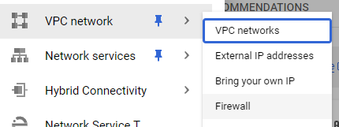
Then, create a firewall rule named "allow-transactions" with the settings shown below that will allow incoming traffic from any source to reach TCP port 8008.
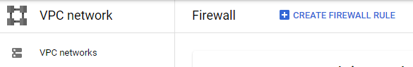
We will now create the backend instance from a pre-built Compute Engine image. To do so, go to Compute Engine from the console and create an instance.
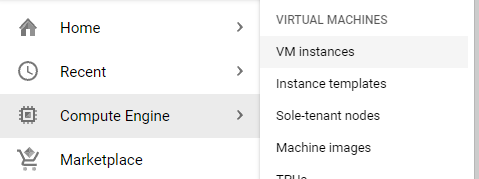
Configure the instance as below.
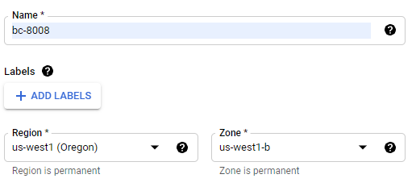
When specifying the boot disk, click on "Change"
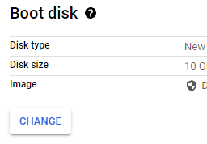
Click on the "Custom images" tab, then click on "Select a Project".
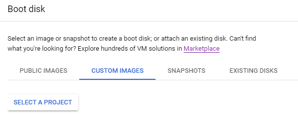
In the "Select from" dropdown, click on "No Organization", then on "cs410b"
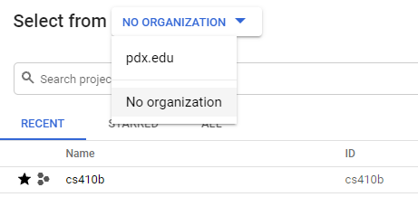
Finally, in the Image dropdown menu, select "bc-backend-8008", then click on "Select"
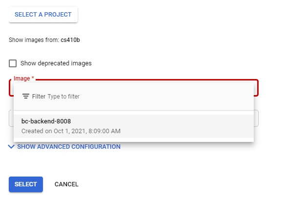
Back in the VM configuration window, click on "Allow HTTP traffic" .
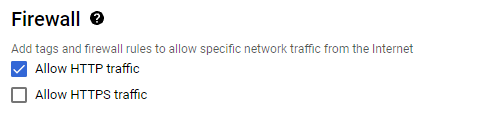
Click on "Management, security, disks, networking, ...", then within the interface, click on the "Networking" tab and then specify a network tag that you created in the previous step to allow port 8008 traffic (transaction-receive)
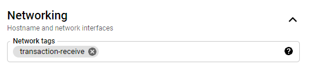
Finally, "Create" the VM.
It will take some time for the instance to start running. Once the green check mark is next, the server has been successfully started. Note that it may take a short time before it is able to handle requests.
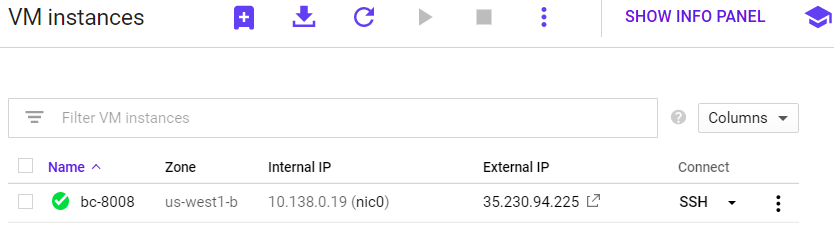
We will now create another VM that will be used to run our frontend code. From this VM, we will issue transactions to the backend VM on port 8008.
Go back to Compute Engine and create a new instance named "taskledger-frontend" 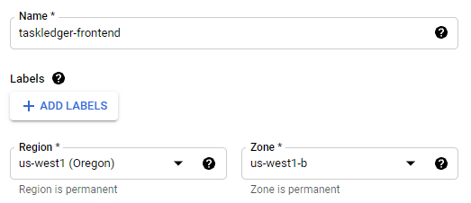
Set the boot disk to be Ubuntu 18.04 LTS from the "Public Images" tab.
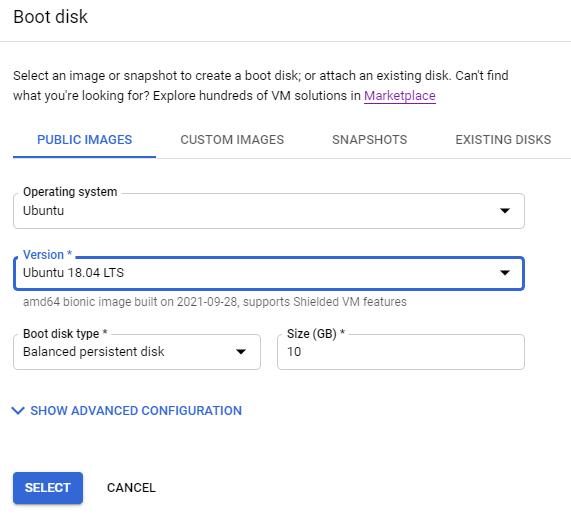
Click on "Allow HTTP Traffic" as before.
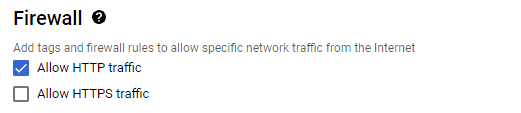
Once the green check mark is next to the name, click on ssh to get a shell on the instance.
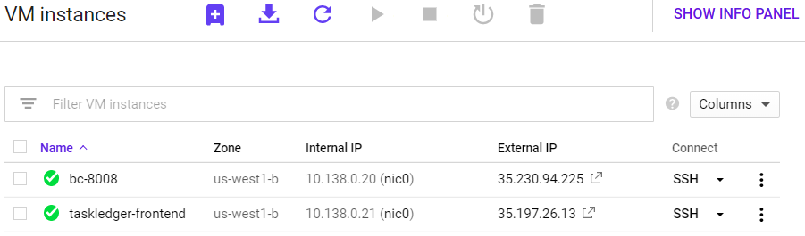
Make a note of the IP addresses of both the backend and frontend VMs. Internal IP addresses are private to your project and can not be accessed externally. External IP addresses can be accessed from the Internet.
After ssh-ing to the frontend instance, run the following commands to install some development tools.
sudo apt update -y sudo apt install -y python3-pip pkg-config libtool automake
Then, install the Hyperledger Sawtooth SDK for Python:
sudo pip3 install requests sawtooth-sdk==1.0.5
Use the instructions from the course setup codelab to create an ssh key for your account and then add the public key to your account that stores your git repository. This will allow you to commit your work easily.
Then, clone the course repository that contains an initial skeleton of the code that you will fill in throughout this tutorial.
git clone https://github.com/wu4f/cs410b-src.git
Next, clone your repository from the previous step, copy the frontend files from the course repository into a directory in your repository named sawtooth01. Then, add, commit and push the new files into it.
git clone git@<git_provider>:<username>/<your-course-repo>.git mkdir <your-course-repo>/sawtooth01 cp -r cs410b-src/frontend/* <your-couse-repo>/sawtooth01 cd <your-course-repo> git add sawtooth01 git commit -m "sawtooth01 initial commit" git push
Using a blockchain system requires all of the nodes in the network to be in agreement.
To change state, any user of the network must send messages called transactions. This causes each node that receives the transaction to register that the transfer has taken place. When this transaction reaches a transaction processor, the desired changes to state are made if the transaction is valid. In this lab, we will only be implementing the client side of creating transactions, which we will send to already functional transaction processors to test. In a future lab you will implement the logic the transaction processors use to change state based on transactions.
Each transaction contains a payload of data which can be used by transaction processors to change state. A transaction to create a task would need a payload that contains a project name to list the task under, the name of the task, and a description for the task. To send this information over the network, we first need to encode it into a serialized binary format. Protobuf or Protocol Buffers are files that we create to generate python data types that can easily be encoded. The protobuf file that we will use for transaction payloads is shown below.
The message type called "Payload" is just a wrapper that will contain one of the other message types in the file. If a user is sending a transaction to create a task, they would include a "CreateTaskAction" message in their transaction. The message contains a project name, a task name, and a description. There is a message type in this file for every transaction action that we will be implementing, including creating a project, creating a task, progressing a task, editing a task, and adding contributors to a project.
syntax = "proto3";
message Payload {
enum Action {
CREATE_PROJECT = 0;
CREATE_TASK = 1;
PROGRESS_TASK = 2;
EDIT_TASK = 3;
ADD_USER = 4;
REMOVE_USER = 5;
}
// An action tells the handler which function
// the payload requested to use.
Action action = 1;
// Time the transaction was sent.
uint64 timestamp = 2;
// All the data necessitated by the actions
// defined in the enum.
CreateProjectAction create_project = 3;
CreateTaskAction create_task = 4;
ProgressTaskAction progress_task = 5;
EditTaskAction edit_task = 6;
AddUserAction add_user = 7;
}
message CreateProjectAction {
//project name
string project_name = 1;
}
message CreateTaskAction {
string project_name = 1;
string task_name = 2;
string description = 3;
}
message ProgressTaskAction {
string project_name = 1;
string task_name = 2;
}
message EditTaskAction {
string project_name = 1;
string task_name = 2;
string description = 3;
}
message AddUserAction {
string project_name = 1;
string public_key = 2;
}The other main component of a transaction is a digital signature that confirms the identity of the creator of the transaction. Each transaction is signed by a private-public keypair. The private key is used to generate a digital signature, which is sent as part of the transaction, and the public key can be used to verify that the creator of the transaction actually has the private key.
At the bottom of "transaction_factory.py" we use the list "sys.argv" to get the parameters given to the script by the user. The zeroth argument is the name of the function to call, which is called by "getattr." For instance if the user wished to create a task, the 0th argument would be "create_task," causing the code to call the function "txn_factory.create_task", which we will implement later.
The first argument is a password, which can be converted to a 256 bit private key using the SHA-256 hashing algorithm. We then create a signer object using the library secp256k1, which is a library containing functions to use bitcoin's implementation of ECDSA (Elliptic Curve Digital Signature Algorithm). We don't need to go into depth to understand how this works, but it is one way to achieve public-private key encryption. This signer object that we create can later be used to sign the transaction we create.
txn_factory = Txn_Factory()
args = sys.argv[1:]
passcode = args[1]
priv_key = hashlib.sha256(passcode.encode('utf-8')).hexdigest()
args[1] = _create_signer(priv_key)
# run desired function
getattr(txn_factory, args[0])(args[1:])If this code was called using the command:
python3 transaction_factory.py create_project pass123 myproject
The following would occur:
txn_factory = Txn_Factory()
#sys.argv = [‘transaction_factory', ‘create_project', ‘pass123', ‘myproject']
args = sys.argv[1:]
#args = [‘create_project', ‘pass123', ‘myproject']
passcode = args[1]
priv_key = hashlib.sha256(passcode.encode('utf-8')).hexdigest()
#priv_key = 9b8769a4a742959a2d0298c36fb70623f2dfacda8436237df08d8dfd5b37374c
args[1] = _create_signer(priv_key)
#args = [‘create_project', signer, ‘myproject']
# run create_project() with arguments [signer, ‘myproject']
getattr(txn_factory, args[0])(args[1:])with the signer function defined below:
def _create_signer(private_key):
signer = secp256k1.PrivateKey(privkey=bytes.fromhex(str(private_key)))
return signerIn this step we will go write some code to create the payload for a transaction that will create a project to list tasks under. First, we can look at the proto file that describes the payload data structure for this type of transaction, and we can see that the only information we need to include in the payload is the project name:
message CreateProjectAction {
//project name
string project_name = 1;
}Now we are ready to bundle together the payload in python. Our function requires two arguments: a signer, which is necessary for signing transactions, and a name for the project. Other than just checking to make sure the correct number of arguments are present, all the function needs to do is initialize a CreateProjectAction protobuf message and then wrap it in Payload protobuf message. This Payload can be encoded into binary using the "SerializeToString()" function. Next we will put this payload data into a transaction and send it to the network.
def create_project(self, args):
''' Creates a transaction that includes a create_project payload
args: [password/signer, project_name]
'''
if not len(args) == 2: # make sure correct number of arguments are present for desired transaction
print("\nIncorrect number of arguments for desired command.\n")
quit()
signer = args[0]
# bundle the action information
action = CreateProjectAction(
project_name = args[1],
)
# bundle the payload
payload = Payload(
action = 0,
timestamp = _get_time(),
create_project = action,
)
# serialize/encode before sending
payload_bytes = payload.SerializeToString()
# Pack it all up and ship it out
txn = self.create_transaction(signer, payload_bytes)
batch_list_bytes = self.create_batch(signer, txn)
send_it(batch_list_bytes)Transactions have three components:
def create_transaction(self, signer, payload_bytes):
'''Bundles together a transaction that includes the given payload and is signed by given signer'''
txn_header_bytes = TransactionHeader(
family_name='todo',
family_version='0.1',
inputs=[addressing.NAMESPACE],
outputs=[addressing.NAMESPACE],
signer_public_key = signer.pubkey.serialize().hex(),
# In this example, we're signing the batch with the same private key,
# but the batch can be signed by another party, in which case, the
# public key will need to be associated with that key.
# make a global batch_public_key
batcher_public_key = signer.pubkey.serialize().hex(),
# must have been generated from the private key being used to sign
# the Batch, or validation will fail
# In this example, there are no dependencies. This list should include
# an previous transaction header signatures that must be applied for
# this transaction to successfully commit.
# For example,
# dependencies=['540a6803971d1880ec73a96cb97815a95d374cbad5d865925e5aa0432fcf1931539afe10310c122c5eaae15df61236079abbf4f258889359c4d175516934484a'],
dependencies=[],
payload_sha512=hashlib.sha512(payload_bytes).hexdigest()
).SerializeToString()
# Ecdsa signing standard, then remove extra ecdsa bytes using compact.
txn_signature = signer.ecdsa_sign(txn_header_bytes)
txn_signature_bytes = signer.ecdsa_serialize_compact(txn_signature)
signature = txn_signature_bytes.hex()
txn = Transaction(
header=txn_header_bytes,
header_signature=signature,
payload=payload_bytes
)
return txn;There is only one step left before the transaction can be sent to the network. The transaction must be added to a batch, which is just a list of transactions. In this code, we are only adding one transaction to the batch before sending it, but multiple transactions can exist in one batch. Similar to transactions, each batch contains a header, a signature, and a list of transactions.
def create_batch(self, signer, txn):
'''Bundles together a batch that includes txn and is signed by given signer'''
batch_header_bytes = BatchHeader(
signer_public_key = signer.pubkey.serialize().hex(),
transaction_ids=[txn.header_signature],
).SerializeToString()
batch_signature = signer.ecdsa_sign(batch_header_bytes)
batch_signature_bytes = signer.ecdsa_serialize_compact(batch_signature)
signature = batch_signature_bytes.hex()
batch = Batch(
header=batch_header_bytes,
header_signature=signature,
transactions=[txn]
)
batch_list_bytes = BatchList(batches=[batch]).SerializeToString()
return batch_list_bytesNow that we have created a batch, we can send it to the network through the REST API set up on our server. The following code uses multiple python libraries to send the batch to the network.
def send_it(batch_list_bytes):
'''Sends batch to REST API, eventually reaching validator nodes and transaction processors'''
# ship it out and scrape
url = "http://bc.oregonctf.org:8008/batches"
headers = { 'Content-Type' : 'application/octet-stream' }
payload = batch_list_bytes
resp = requests.post(url, data=payload, headers=headers)
json_url = json.loads(resp.text)
# print("Batch status link: \n\n" + json_url["link"] + "\n") # DEBUG
resp = requests.get(json_url["link"])
json_batch_status = json.loads(resp.text)
status = json_batch_status["data"][0]["status"]
print("PENDING")
while not (status == "COMMITTED" or status == "INVALID"):
resp = requests.get(json_url["link"])
json_batch_status = json.loads(resp.text)
status = json_batch_status["data"][0]["status"]
print(status)You can now run your code using the terminal command. For this command, you must supply a <password> and a <project_name>. For the project_name, use your OdinID in order to create a project that is unique across the class :
python3 transaction_factory.py create_project <password> <project_name>
The output from this should say:
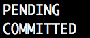
We've given you a script that can be used to view the current state of a project at print_project.py.
# queries state
resp = requests.get(f"http://bc.oregonctf.org:8008/state")Then, run the script using the project you created in the previous transaction:
python3 print_project.py <project_name>
Since you created a project but haven't added any tasks, you should get an output similar to:
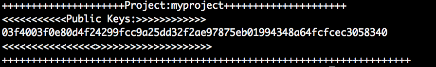
The public key shown is the one created using the password you used to create the project. This password will be necessary to issue further transactions affecting this specific project.
Now that we have the project creation done, we can move on to creating tasks. We can use the same code for creating transactions and batches, but the payload contained inside the transaction will be different.
Creating payloads for task creation transactions is quite similar to creating payloads for creating projects, but the function must be edited slightly for the additional fields in the CreateTaskAction protobuf message that constitutes our payload:
message CreateTaskAction {
string project_name = 1;
string task_name = 2;
string description = 3;
}With this in mind, we can edit the payload creation function we implemented in the previous step:
def create_task(self, args):
''' Creates a transaction that includes a create_task payload
args: [password/signer, project_name, task_name, description]
'''
if not len(args) == 4: # make sure correct number of arguments are present for desired transaction
print("\nIncorrect number of arguments for desired command.\n")
quit()
signer = args[0]
# bundle the action information
action = CreateTaskAction(
project_name = args[1],
task_name = args[2],
description = args[3]
)
# bundle the payload
payload = Payload(
action = 1,
timestamp = _get_time(),
create_task = action,
)
# serialize/encode before sending
payload_bytes = payload.SerializeToString()
# Pack it all up and ship it out
txn = self.create_transaction(signer, payload_bytes)
batch_list_bytes = self.create_batch(signer, txn)
send_it(batch_list_bytes)This can be run using this command (after creating the project first). Do note that the description can only be one word.
python3 transaction_factory.py create_task <password> <project_name> <task_name> <description>
The output from this should say:
Try printing the project. The task that you created should show up:
python3 print_project.py <project_name>
Now we will make a function to create a payload for transactions that edit the descriptions of tasks.
Looking at the proto of EditTaskAction, we see that it requires the same fields as CreateTaskAction.
message EditTaskAction {
string project_name = 1;
string task_name = 2;
string description = 3;
}With this in mind, we can easily create our new payload bundling function:
def edit_task(self, args):
''' Creates a transaction that includes a create_project payload
args: [password/signer, project_name, task_name, description]
'''
if not len(args) == 4: # make sure correct number of arguments are present for desired transaction
print("\nIncorrect number of arguments for desired command.\n")
quit()
signer = args[0]
# bundle the action information
action = EditTaskAction(
project_name = args[1],
task_name = args[2],
description = args[3]
)
# bundle the payload
payload = Payload(
action = 3,
timestamp = _get_time(),
edit_task = action,
)
# serialize/encode before sending
payload_bytes = payload.SerializeToString()
# Pack it all up and ship it out
txn = self.create_transaction(signer, payload_bytes)
batch_list_bytes = self.create_batch(signer, txn)
send_it(batch_list_bytes)This can be run using command (after creating the project and task first):
python3 transaction_factory.py edit_task <password> <project_name> <task_name> <new_description>
The output from this should say:
Try printing the project. The task that you edited should have the new description.
python3 print_project.py <project_name>
Now we will make a function to create a payload for transactions that add contributors to projects.
As always, we need to look at the protobuf message that we are sending:
message AddUserAction {
string project_name = 1;
string public_key = 2;
}This time, the payload requires a public key, which is a 256 bits, so we probably don't want to have to type it all in. Instead, we will have the user input a new password which we will use to create a corresponding public key. The rest of the code for this function is quite similar to the previous few:
def add_user(self, args):
''' Creates a transaction that includes an add_user payload
args: [password/signer, project_name, public_key]
'''
if not len(args) == 3: # make sure correct number of arguments are present for desired transaction
print("\nIncorrect number of arguments for desired command.\n")
quit()
signer = args[0]
new_pass = args[2]
priv_key = hashlib.sha256(new_pass.encode('utf-8')).hexdigest()
args[2] = _create_signer(priv_key).pubkey.serialize().hex()
# bundle the action information
action = AddUserAction(
project_name = args[1],
public_key = args[2],
)
# bundle the payload
payload = Payload(
action = 4,
timestamp = _get_time(),
add_user = action,
)
# serialize/encode before sending
payload_bytes = payload.SerializeToString()
# Pack it all up and ship it out
txn = self.create_transaction(signer, payload_bytes)
batch_list_bytes = self.create_batch(signer, txn)
send_it(batch_list_bytes)This can be run using command (after creating the project first):
python3 transaction_factory.py add_user <password> <project_name> <new_password>
The output from this should say:
Try printing the project. There should be an additional public key in the project. Try out using the new password on other commands to confirm that the new contributor can send transactions that affect the project.
python3 print_project.py <project_name>
Using what you have seen in the first 4 payload creation functions, implement a function that can create a payload for transactions that increase the progress of tasks. The proto message is shown below:
message ProgressTaskAction {
string project_name = 1;
string task_name = 2;
}Be sure to run the function and print out the project to see that the tasks actually increase their progress.
So far we've used the print_project.py file to view the current state of a project, but in sawtooth, all transactions are saved forever, even if they are overwritten (for example, if a task description is edited twice, the record of first edit is still saved. In this step, we will look at and decode some of these stored transactions.
First, browse the url
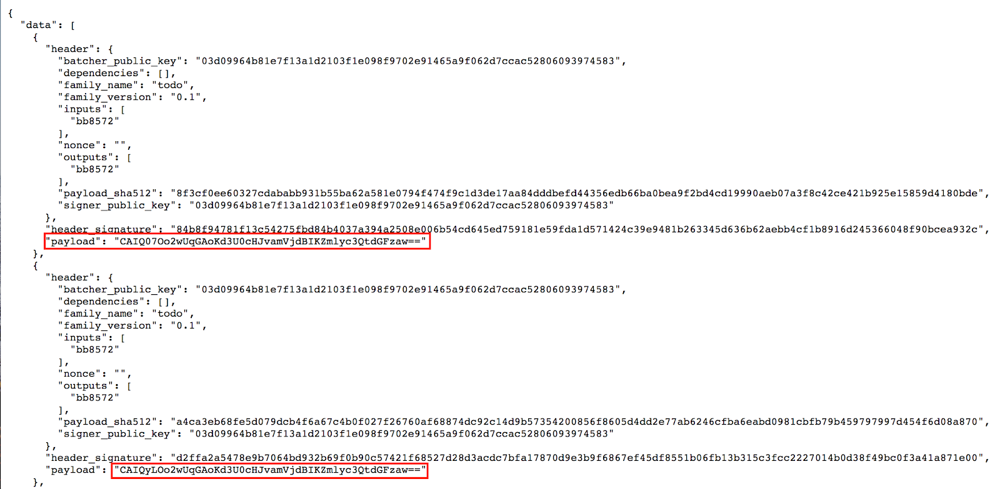
We can take these encoded strings and decode them. The following code takes an encoded payload, base64 decodes it, decodes it using protobuf, pulls payload out of the wrapper, and prints it.
import base64
from protobuf.payload_pb2 import *
encoded_payload = '(insert encoded payload here)'
payload_wrapper = Payload()
# decode the payload from the binary format
payload_wrapper.ParseFromString(base64.b64decode(encoded_payload))
# define the desired action type indicated by the payload
action = payload_wrapper.action
timestamp = payload_wrapper.timestamp
# used to determine which handler function should be used on a certain type of payload
TYPE_TO_ACTION_HANDLER = {
Payload.CREATE_PROJECT: 'create_project',
Payload.CREATE_TASK: 'create_task',
Payload.PROGRESS_TASK: 'progress_task',
Payload.EDIT_TASK: 'edit_task',
Payload.ADD_USER: 'add_user'
}
try:
# get the correct payload field and handler function from the action type
attribute= TYPE_TO_ACTION_HANDLER[action]
print(attribute)
except KeyError:
raise Exception('Specified action is invalid')
# extract the correct payload based on the action type
payload = getattr(payload_wrapper, attribute)
print(payload)This code can be run with the following command:
python3 decode_payload.py
Run the code.